Mỗi khi những cành mai, cành đào nở rộ, người Việt Nam lại háo hức chờ đón Tết Nguyên Đán – ngày lễ lớn nhất trong năm. Đây là dịp để mọi người tạm gác công việc, trở về với gia đình, cùng chuẩn bị mâm cơm tất niên, dọn dẹp nhà cửa và tham gia nhiều phong tục đặc sắc đã gắn bó với dân tộc hàng nghìn năm. Vậy tết nguyên đán là gì? Nguồn gốc của nó từ đâu đến? Các hoạt động trong ngày lễ này như thế nào? Và ý nghĩa mà nó mang lại là gì? Các bạn hãy cùng tìm hiểu với chúng mình nhé!
Khái niệm
Tết Nguyên Đán, hay còn gọi là Tết Âm Lịch, là lễ Tết cổ truyền lớn nhất trong năm của người Việt Nam, được tổ chức vào dịp đầu năm mới theo lịch âm. Tết Nguyên Đán đánh dấu sự khởi đầu của mùa xuân và là dịp để người Việt tỏ lòng hiếu kính với tổ tiên, sum vầy bên gia đình, bạn bè và cùng nhau đón chào một năm mới với hy vọng mọi điều tốt đẹp, sức khỏe, may mắn và thịnh vượng.
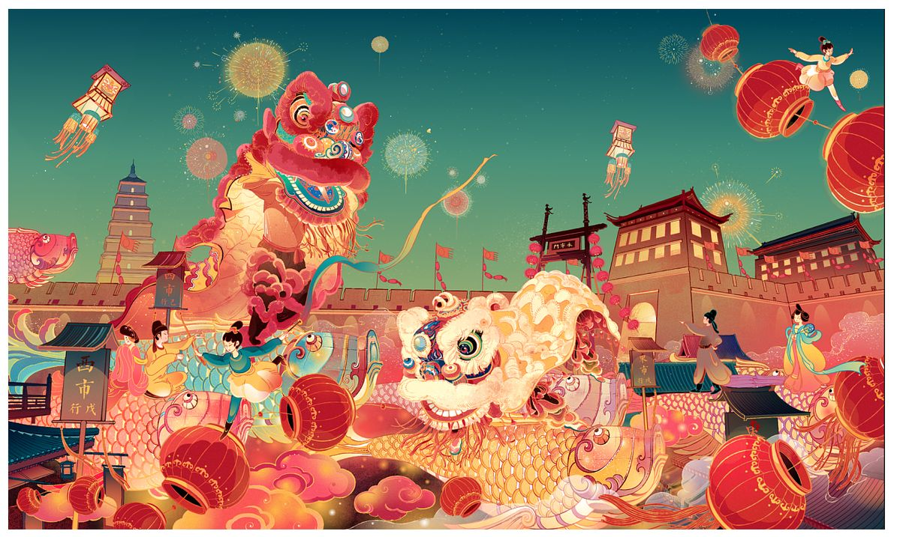Tết Nguyên Đán của Việt Nam được tính theo Âm lịch. Vì Âm lịch là lịch theo chu kỳ vận hành của mặt trăng nên Tết Nguyên Đán muộn hơn Tết Dương lịch. Do quy luật 3 năm nhuận một tháng của Âm lịch nên ngày đầu năm của dịp Tết Nguyên Đán không bao giờ trước ngày 21 tháng 1 Dương lịch và sau ngày 19 tháng 2 Dương lịch mà thường rơi vào khoảng cuối tháng 1 đến giữa tháng 2 Dương lịch. Toàn bộ dịp Tết Nguyên Đán hàng năm thường kéo dài trong khoảng 7 đến 8 ngày cuối năm cũ và 7 ngày đầu năm mới (23 tháng Chạp đến hết ngày 7 tháng Giêng), với những nghi thức và phong tục đặc trưng, như dọn dẹp nhà cửa, mua sắm đồ Tết, thăm ông bà tổ tiên, lì xì cho trẻ em, và thưởng thức những món ăn truyền thống như bánh chưng, bánh tét, mứt Tết, và các món đặc sản khác.
Tết Nguyên Đán còn là dịp để mọi người thể hiện lòng biết ơn đối với ông bà, tổ tiên, đồng thời là thời gian để nghỉ ngơi, thư giãn và đoàn tụ gia đình sau một năm làm việc vất vả.
Nguồn gốc
Chịu ảnh hưởng mạnh mẽ từ văn hoa Trung Quốc trong hơn 1000 năm Bắc thuộc, Tết Nguyên Đán cũng là một trong những nét văn hóa được du nhập trong thời điểm đó. Theo lịch sử Trung Quốc, nguồn gốc Tết Nguyên Đán có từ đời Tam Hoàng Ngũ Đế và thay đổi theo từng thời kỳ. Đời Tam Vương, nhà Hạ chuộng màu đen nên chọn tháng giêng, tức tháng Dần. Nhà Thương thích màu trắng nên lấy tháng Sửu, tức tháng chạp, làm tháng đầu năm. Nhà Chu ưa sắc đỏ nên chọn tháng Tý, tức tháng mười một, làm tháng Tết. Các vua chúa nói trên quan niệm về ngày giờ "tạo thiên lập địa" như sau: giờ Tý thì có trời, giờ Sửu thì có đất, giờ Dần sinh loài người nên đặt ra ngày Tết khác nhau.
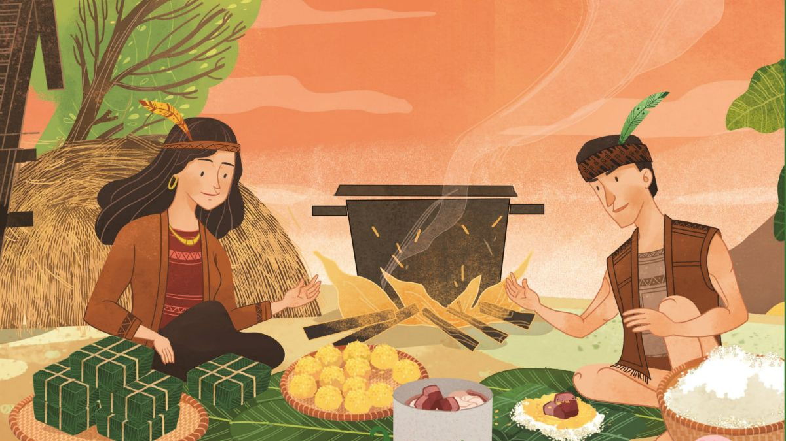
Đến thời Đông Chu, Khổng Tử đổi ngày Tết vào một tháng nhất định là tháng Dần. Đời nhà Tần (thế kỷ 3 TCN), Tần Thủy Hoàng lại đổi qua tháng Hợi, tức tháng mười. Đến thời nhà Hán, Hán Vũ Đế (140 TCN) lại đặt ngày Tết vào tháng Dần, tức tháng giêng. Từ đó về sau, không còn triều đại nào thay đổi về tháng Tết nữa.
Đến đời Đông Phương Sóc, ông cho rằng ngày tạo thiên lập địa có thêm giống gà, ngày thứ hai có thêm chó, ngày thứ ba có thêm lợn, ngày thứ tư sinh dê, ngày thứ năm sinh trâu, ngày thứ sáu sinh ngựa, ngày thứ bảy sinh loài người và ngày thứ tám mới sinh ra ngũ cốc. Vì thế, ngày Tết thường được kể từ ngày mồng một cho đến hết ngày mồng bảy.
Các giai đoạn chính
Người Việt Nam quan niệm rằng ngày Tết thì tất cả mọi thứ đều phải thật sớm và mới. Do đó trước ngày Tết khoảng hơn 2 tuần, các gia đình đã sắm sửa cho ngày Tết. Họ thường quét dọn, trang trí nhà cửa, mua hoa, sắm thức ăn... thật chu đáo cho ngày Tết. Ngoài ra, tất cả những vật dụng không cần thiết hoặc bị cho là đem lại điềm gở cũng bị vứt bỏ. Dùng từ "Tết" thay cho từ "âm lịch" từ ngày 23/12-10/1 để mừng Tết đến.
Rằm tháng Chạp
Rằm tháng Chạp là lễ cúng rằm của tháng tổng kết cuối cùng của một năm, chuẩn bị cho lễ cúng ông Táo và lễ Giao Thừa đón năm mới. Chính vì vậy, nhiều gia đình Việt coi trọng lễ này hơn các lễ cúng rằm khác trong năm. Các lễ nghi và thủ tục cúng rằm tháng Chạp cũng được chuẩn bị chu đáo, kỹ lưỡng hơn. Rằm tháng Chạp vào ngày 15 tháng cuối cùng âm lịch, tức là chỉ còn 8 ngày nữa đến Tết ông Táo, và khoảng nửa tháng nữa là đến lễ cúng tất niên đón năm mới.
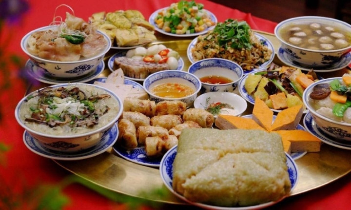Cúng ông Công ông Táo
Công việc chính thức sửa soạn đón Tết của người Việt Nam thường bắt đầu từ ngày 23 tháng Chạp, là ngày mà người Việt cúng ông Táo (Táo quân). Theo quan điểm của người Việt thì ông Táo vừa là thần bếp trong nhà vừa là người ghi chép tất cả những việc làm tốt xấu mà con người đã làm trong năm cũ và báo cáo với Ngọc Hoàng những vấn đề tốt xấu của gia chủ. Ông Táo được cúng vào trưa hoặc chiều ngày 23 tháng Chạp âm lịch hàng năm. Lễ cúng gồm có hương (nhang), nến, hoa quả, vàng mã và hai mũ đàn ông, một mũ đàn bà kèm theo ba con cá chép (cá chép thật hoặc cá chép làm bằng giấy kèm theo cỗ mũ). Theo sự tích ông Táo, cá chép sẽ đưa ông Táo vượt qua Vũ Môn để lên Thiên đình gặp Ngọc Hoàng. Một số gia đình ở nông thôn vẫn còn gìn giữ phong tục dựng cây nêu, trong khi ở thành phố, phong tục này đã bị lãng quên. Theo phong tục, cây nêu được dựng lên để chống lại quỷ dữ và những điềm gở. Cây nêu thường được treo hoặc trang trí thêm những thứ được coi là để dọa ma quỷ như: tỏi, xương rồng, hình nộm và lá dứa. Trước ngày Tết, người Việt cũng chuẩn bị bánh chưng, bánh giầy còn ở miền nam thì loại bánh phổ biến là bánh tét và các món ăn thịnh soạn để dâng lên ông bà tổ tiên.
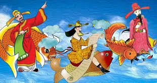Tất niên
Ngày Tất niên có thể là ngày 30 tháng Chạp (nếu là năm đủ) hoặc 29 tháng Chạp (nếu là năm thiếu). Đây là ngày gia đình sum họp lại với nhau để ăn cơm buổi tất niên. Buổi tối ngày này, người ta làm cỗ cúng tất niên. Giữa ngày 30 (hoặc 29) tháng Chạp và ngày mồng 1 tháng Giêng, giờ Tý (từ 23 giờ hôm trước đến 1 giờ hôm sau), trong đó thời điểm bắt đầu giờ Chính Tý (0 giờ 0 phút 0 giây ngày Mồng 1 tháng Giêng) là thời khắc quan trọng nhất của dịp Tết. Nó đánh dấu sự chuyển giao năm cũ và năm mới, nó được gọi là Giao thừa. Để ghi nhận thời khắc này, người ta thường làm hai mâm cỗ. Một mâm cúng gia tiên tại bàn thờ ở trong nhà mình và một mâm cúng thiên địa ở khoảng sân trước nhà. Một số cộng đồng lấy con hổ là vật thờ thì gọi là cúng Ông Ba Mươi. Một số cộng đồng khác thì có một phần cỗ dành để cúng chúng sinh, cúng những cô hồn lang thang không nơi nương tựa.
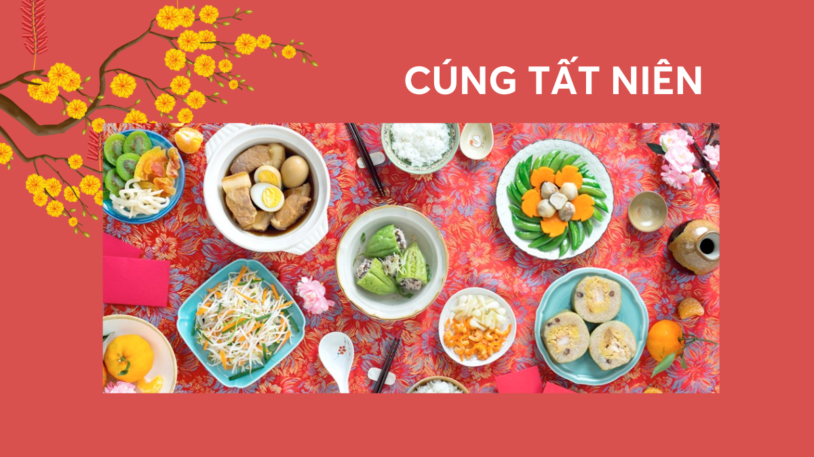Sắp dọn bàn thờ
Trong gia đình người Việt thường có một bàn thờ tổ tiên, ông bà (hay còn gọi ông vải). Cách trang trí và sắp đặt bàn thờ khác nhau tùy theo từng nhà. Biền, bàn thờ là nơi tưởng nhớ, là thế giới thu nhỏ của người đã khuất. Hai cây đèn tượng trưng cho Mặt Trời, Mặt Trăng và hương là tinh tú. Một bát hương đặt chính giữa (có thể có hai bát hương nhỏ hơn đặt đối xứng hai bên). Phía sau hai cây đèn thường có hai cành hoa cúc giấy với nhiều bông nhỏ bao quanh bông lớn. Có nhà cũng cắm "cành vàng lá ngọc" (một thứ hàng mã) với sự cầu mong làm ăn được quả vàng, quả bạc và buôn bán lãi gấp nhiều lần năm trước. Ở giữa có trục "vũ trụ" là khúc trầm hương dưới dạng khúc khuỷu và vươn lên trong bát hương. Nhiều gia đình đặt xen hai cái đĩa giữa đèn và hương để đặt hoa quả lễ gọi là mâm ngũ quả (tuỳ mỗi miền có sự biến thiên các loại quả, nhưng mỗi loại quả đều có ý nghĩa của nó). Trước bát hương để một bát nước trong để coi như nước thiêng. Hai cây mía đặt ở hai bên bàn thờ là để các cụ chống gậy về với con cháu và dẫn linh hồn tổ tiên từ trên trời về hạ giới.
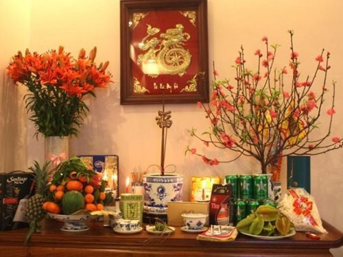Giao thừa
Giao thừa là thời khắc chuyển giao giữa năm cũ và năm mới. Trong thời khắc giao thừa mọi người trong gia đình thường dành cho nhau những lời chúc tốt đẹp nhất. Vào dịp này, các địa phương thường tổ chức bắn pháo hoa trong thời lượng từ 10 phút đến 15 phút ở những địa điểm rộng rãi, thoáng mát.
Cúng Giao thừa là lễ cúng để đem bỏ hết đi những điều xấu của năm cũ sắp qua để đón những điều tốt đẹp của năm mới sắp đến.
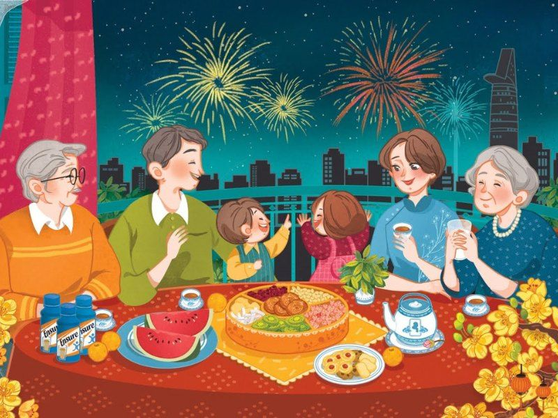Hoạt động
Các hoạt động trước Tết
- Dọn dẹp và trang trí nhà cửa:Tổng vệ sinh nhà cửa, ban thờ, và trang trí bằng hoa mai, hoa đào, câu đối.
- Mua sắm Tết:Chuẩn bị quần áo mới, đồ dùng gia đình và vật dụng trang trí.
- Gói bánh chưng, bánh tét:Gói các loại bánh truyền thống để làm lễ vật dâng cúng và làm quà biếu.
- Chuẩn bị mâm cỗ:Bày biện mâm ngũ quả, chuẩn bị các món ăn truyền thống.
- Cúng ông Công, ông Táo và tất niên:Cúng tiễn các vị thần về trời và làm lễ cúng tất niên để kết thúc năm cũ.
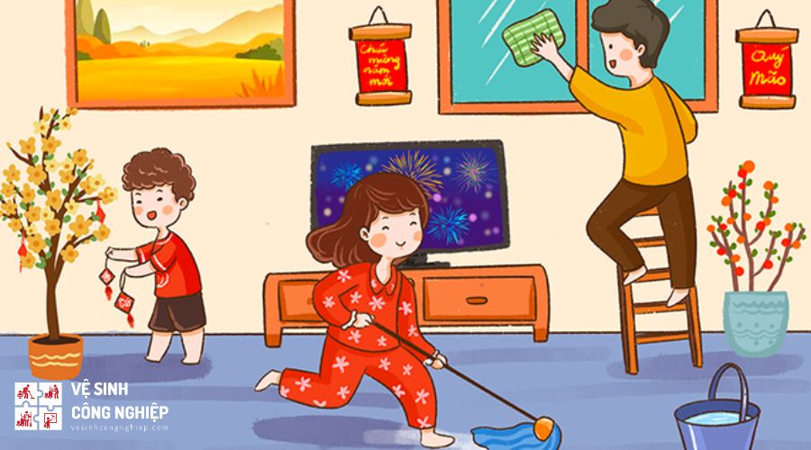

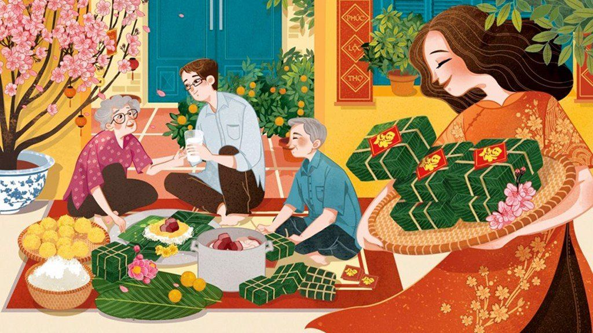
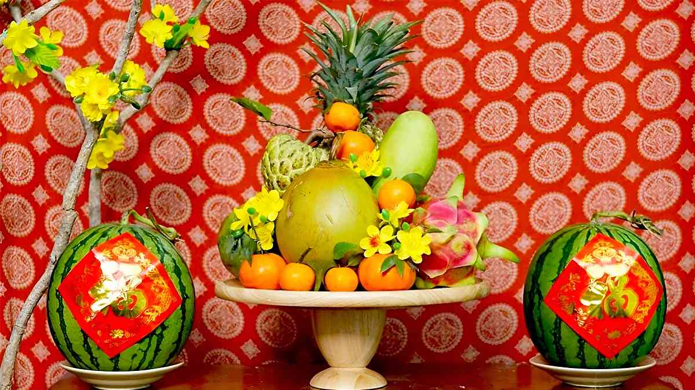
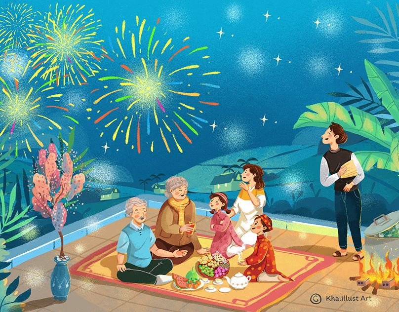
Các hoạt động trong Tết
- Lễ cúng giao thừa:Cùng gia đình đón giao thừa và cầu mong những điều tốt đẹp cho năm mới.
- Xông đất đầu năm:Chọn người xông đất hợp tuổi để mang lại may mắn cho gia đình.
- Chúc Tết và mừng tuổi:Đi thăm hỏi, chúc Tết ông bà, cha mẹ, họ hàng và mừng tuổi cho trẻ nhỏ.
- Đi lễ chùa:Ghé thăm các đền, chùa để cầu bình an, may mắn và sức khỏe.
- Dự hội chợ và lễ hội:Tham gia các chợ hoa, chợ phiên, lễ hội truyền thống của địa phương.
- Thăm họ hàng và bạn bè:Tiếp tục thăm hỏi người thân, bạn bè để gắn kết tình cảm.
- Chơi trò chơi dân gian:Tham gia các trò chơi truyền thống như kéo co, bầu cua cá cọp, ô ăn quan....
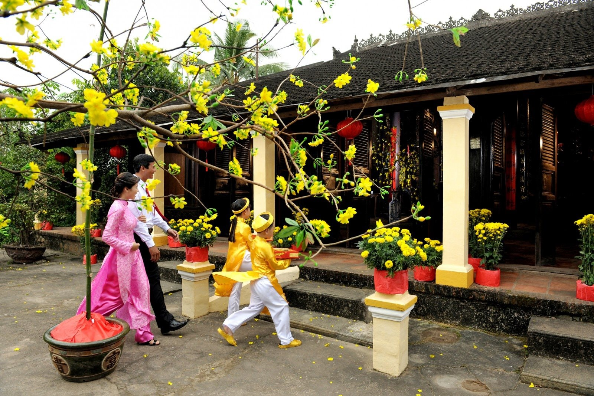
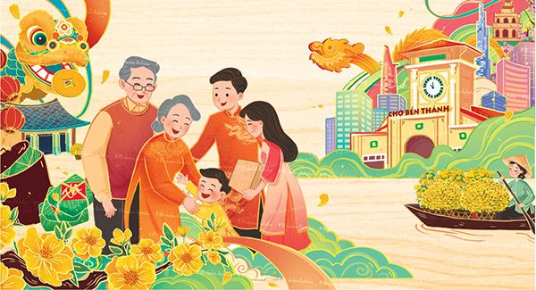
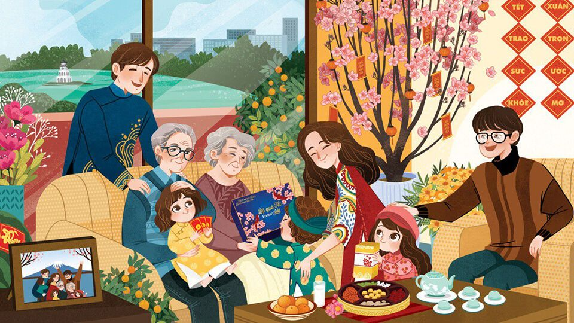
Ý nghĩa
Với người Việt Nam, Tết Nguyên Đán không chỉ là khoảng thời gian chuyển giao giữa năm cũ và năm mới Âm lịch mà nó còn chứa đựng nhiều ý nghĩa tâm linh, văn hóa,... Theo quan niệm phương Đông, đây là khoảng thời gian trời đất có sự giao hòa và con người trở nên gần với thần linh.
Tết Nguyên Đán xưa là dịp để người nông dân bày tỏ lòng thành kính đến các vị thần linh như thần Đất, thần Mưa, thần Sấm, thần Nước, thần Mặt trời,... và cầu cho một năm mưa thuận gió hòa, mùa màng bội thu.
Bên cạnh đó, đây còn được coi là ngày “làm mới”, ngày để mọi người có thể hy vọng vào một năm mới an lành, sung túc, thuận lợi trong cả năm và gác lại mọi điều không may mắn trong năm cũ. Do vậy, vào dịp Tết, nhà nào cũng tất bật dọn dẹp, sắm sửa, trang hoàng nhà cửa cho thật đẹp.
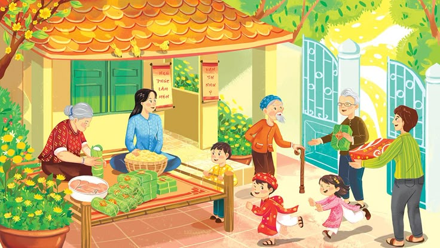
Đây cũng là dịp đoàn viên của mọi gia đình. Mỗi khi Tết đến, dù làm bất cứ nghề gì, ở bất cứ nơi đâu đều mong được trở về sum họp dưới mái ấm gia đình trong ba ngày Tết, cùng nhau thắp nén hương tưởng nhớ ông bà, tổ tiên, tạ ơn ông bà, tổ tiên đã phù hộ trong suốt một năm qua. "Về quê ăn Tết", đó không phải là một khái niệm thông thường đi hay về, mà là một cuộc hành hương về với cội nguồn, nơi chôn rau cắt rốn. Điều đó đã trở thành nếp sống, truyền thống tốt đẹp, bền vững. Cho nên, những ngày trong dịp Tết Nguyên Đán thực sự là những ngày vui vẻ, hạnh phúc cho tất cả mọi người.
Hãy gửi một lời chúc tết thật ý nghĩa nhé!